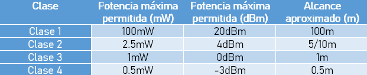

Los dispositivos Bluetooth se pueden clasificar de dos maneras distintas:
Por su potencia y alcance:

Por su ancho de banda:
Principales usos, aplicaciones y donde los podemos encontrar:
Conexión sin cables vía OBEX.
Transferencia de fichas de contactos, citas y recordatorios entre dispositivos vía OBEX.
Reemplazo de la comunicación por cable entre equipamiento médico y GPS.
Controles remotos (antes dominado por infrarrojo, ahora en auge).
Enviar publicidad y anuncios personalizados según la posición de balizas Bluetooth. (Por ejemplo, Google Nearby).
Mandos de consolas como PlayStation3, PlayStation 4, Microsoft Xbox 360, Xbox One, Wii, Wii U y Nintendo Switch incorporan esta tecnología.
Conexión inalámbrica entre sistemas de audio y altavoces.
Periféricos como: teclados, ratones, auriculares, etc.
Transferencia de archivos desde un dispositivo a otro y viceversa.